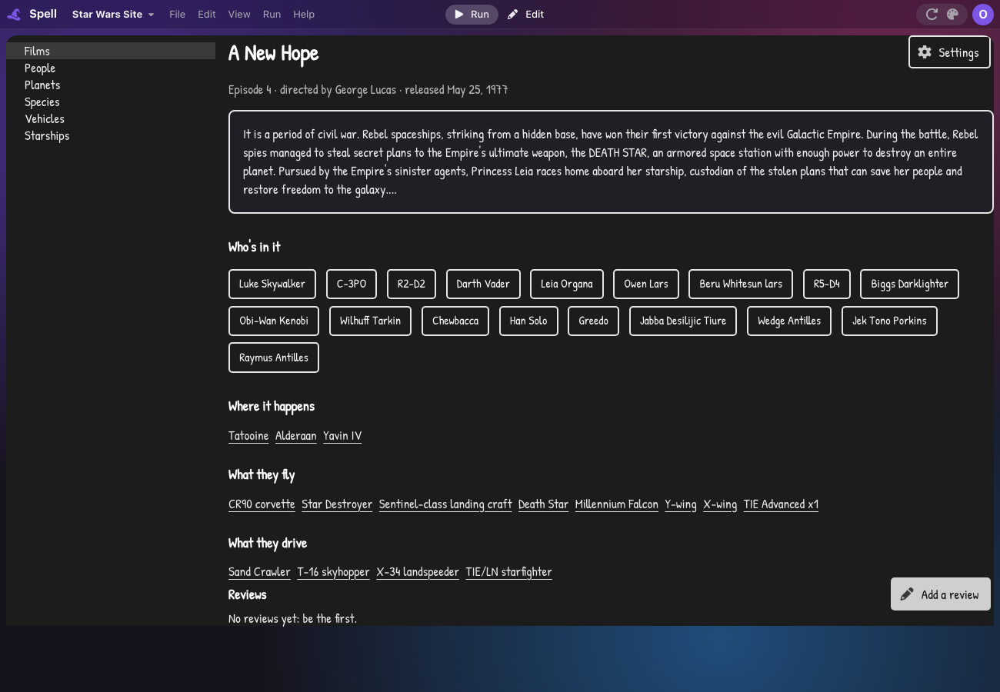
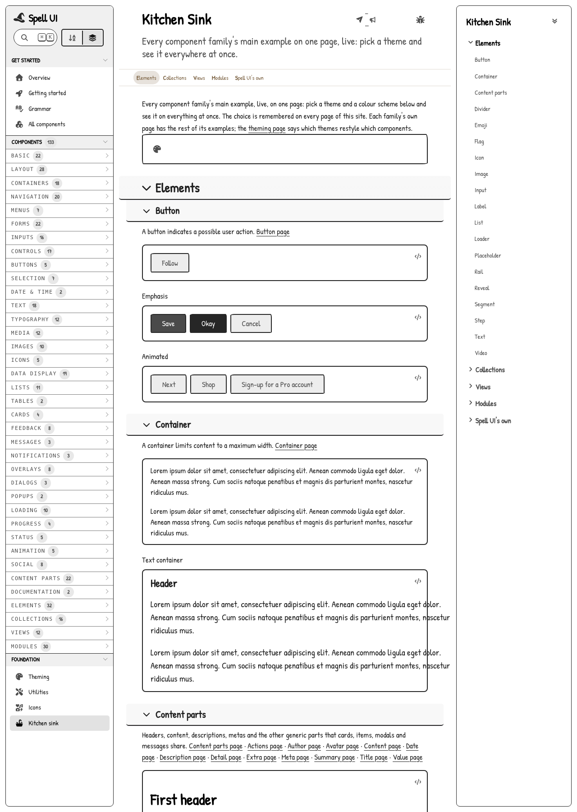
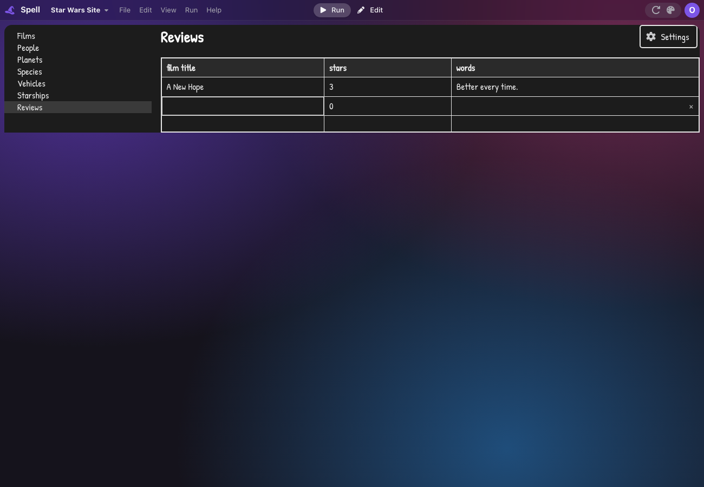
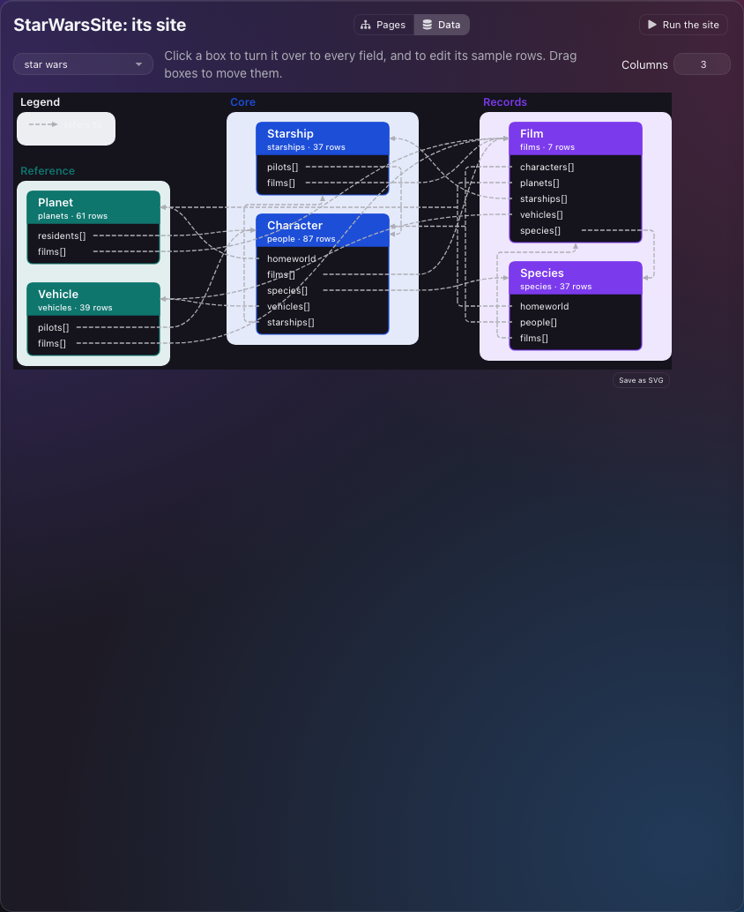

Sites And Mockups
A Spell project can now be a whole site: pages at real addresses, a side nav, a site editor, and a sketchy Mockup theme to click through before anything looks finished.
mockup; all but the home page is on main alreadyThis is a film's page in the example Star Wars site, running in the editor's Run view, in the Mockup theme:

/run/@spell/examples/StarWarsSite/films/1, in a dark editor.
The whole site, its pages and their addresses, is a few lines of the project:
galaxy guide is a site
its "theme" is "mockup"
it has a films page at "/films", named "Films"
it has a film page at "/films/:film", named "Film"
it has a reviews page at "/reviews", named "Reviews"
it has a review dialog
it has a person sidebar
it has a not found page-
:filmisn't typed here: it's the film page's own property,its "film" is a film. So the address fills it with that film. -
The film page never names its address. Its people are buttons that run
show the person sidebar for person; its planets are links tothe address of the planet page for planet.
Owen is redesigning a site for his day job, from a Figma board of old and new screens. A Spell project was one app in one root, with no pages, no addresses and no way to sketch a page before building it.
Now it has all the pieces between a board and a site people can click through:
- a SITE file listing pages, dialogs and sidebars, each page at an address with its parameters
- a side nav drawn from it, and a site editor to add, move, rename and delete pages
- each page's STORIES, what it must let people do, written first and kept for good
- a THUMBNAIL per page: a picture of the screen it stands for, shown until the page draws something of its own
- TAGS on a site's pages, and an index page that draws itself from them, with a search
- the Mockup theme: hand-drawn corners and handwriting, so nobody mistakes a sketch for the finished look
- spreadsheet-style editable tables, and NERD / ERD diagrams of the data a site reads
- signing in to a private site once, then reading its data, its pages' rows and pictures of its pages as you
Owen's Figma board was read once into two private sites, the current one and the new one, which live beside the kit and never in it. The examples anyone can open are Spell's own app as a site, Spell UI's component site and the Star Wars site.
Not yet: signing in has only been tried against a made-up site, not a real company sign-in. There is no general Figma reader: a second board would be read by hand again.
The site lists every page, dialog and sidebar, a line each, a page's pages under it. A site kept in a space says where:
galaxy guide is a site at "owen@spell/galaxy"
it has a films page at "/films", named "Films"
it has a film page at "/films/:film"
it has a settings dialog
it has a person sidebar
it has a not found page-
The editor refuses, at the line: an address not starting with
/, a parameter the page has no property for, and two pages at one address. - A name no file declares yet isn't refused: the page waits, and runs as its title with a line saying it isn't made yet.
- Every site gets a not found page and an error page; delete one and a plain built-in one shows.
- It reads in Spanish too:
guía galáctica es un sitio en la nube:. -
A line can say where its card sits on the site editor's board, and its colour:
, in row 2 column 3, colored blue.- The row and column count inside the card's section, so moving a section changes no other.
- A section's colour is one of Spell UI's colour names, and its pages take it.
- Dragging a card on the board writes these for you.
-
/site/<group>(/site/owen@spell) lists the group's sites, each linking to its site editor.
A big site doesn't fit in one file. Its site file can be titles and addresses alone, named
Galaxy.site.spell, with each page a file of its own:
galaxy guide is a site
group "Home", color red
it has a Home at "/"
it has a System Notices sidebar
group "My Stuff", color orange
// What each person keeps for themselves
it has a My Inbox at "/my-inbox", live "https://example.com/inbox"-
A page's name is its title:
"My Inbox", no second, named "...". The older name-and-title lines keep working, and so do one-file sites. -
A
groupline is flat and heads the lines after it: a section of the site editor's board, and of the running site's navigation.-
Its colour comes after its name,
group "Home", color red; its section's cards take it.group "Home" with color redand, colored redsay the same. - In Spanish:
grupo "Inicio", color rojo, orcon color rojo. - Its description is the first comment under it, as any declaration's is.
-
Its colour comes after its name,
-
, live "https://..."is the real page a mockup stands for. Its card in the site editor gets a new-tab icon that opens it; a card without one has no icon. - In the site editor, a double click on a card opens its page's own file, and makes the file first when there's none.
- A page line can also carry its tags, its state and its thumbnail, below.
The catch: a misspelled page name is no longer an error, it shows as a page still to make. A
sidebar's address (at "/...") is read and shown on its card, but going to it doesn't open the
sidebar.
Every way of moving names the page, never its address, so a page can move without anything else changing:
| Spell | What it does |
|---|---|
go to the film page for this film |
shows that page, its address in the URL |
show the film page with this film |
the same, in the words a program uses to show things |
show the person sidebar for person |
opens a slide-out panel (<ui-flyout>) |
show the settings dialog |
opens a modal (<ui-modal>) |
close the review dialog |
closes it, from a button inside it |
the address of the planet page for planet |
the text for a link |
-
In Run, a page's address is the part after the project:
/run/@spell/examples/StarWarsSite/films/1. Back and forward work. - A name the site doesn't list is an error at its line, wherever the page is declared, naming the pages the site does have.
- While designing, an address no page has offers "No such page. Would you like to create one?", which adds the page as one undo step, and the running site goes straight to it.
View › Site opens it, at /site/<project>, for a project that is a site. Two tabs:
- Pages: a tree of the site's parts (drag to move), a board of cards (double-click opens the page in Edit, with Back to the site there), and the picked page's form: name, title, address, parameters, state, live link, stories.
- Data: each place the site reads, as a NERD (below).
- Every change is one undo step in the site file.
- Renaming a page renames every line that names it, in every file.
- Deleting a page with pages under it asks first, naming them.
-
A page's state says how far along it is: old, new, mocked or built.
- On its line:
, old.
- On its line:
- A card shows the page's thumbnail, when it has one, and its letter tile otherwise.
The catch: rows in the tree drop only before another row, never into one.
Before a page is laid out, it says what it must let people do, first in its own declaration:
film page is a page
<stories>
<story "S1" done>read the film's opening crawl</story>
<story "S2" done>
As a fan, I want to see who's in a film, so that I can find their other films
Done when its people are listed, each a link to their page
</story>
</stories>-
A story is its words, then two blank lines and its description, if it has one;
doneticks it off. The numbers are written for you. - Nothing draws them: they're kept for good, into the real site, and the site editor's side panel has one field per story.
- In Spanish,
<historias>and<historia "H1" hecha>. - The older markdown list of jobs is gone, and refused.
A page that is only a picture of a design says so in one line, and shows that picture when it runs:
notebook page is a page
its thumbnail is "snapshots/notebook.jpg"- A page or a view with nothing to draw draws its thumbnail. Write a drawing and the picture steps aside: nothing to remove.
-
A drawing that wants the picture under its buttons places it with
draw its thumbnail, as Spell's own app as a site does on its home page. - Stories and properties aren't drawing: a page with both still shows its thumbnail.
- A thumbnail can be written on the page or view, or on the site's line. The site editor's card takes the site line's, else the page's.
-
Each way, and in Spanish:
- on a page:
its thumbnail is "x.jpg",su miniatura es "x.jpg" - on a site line:
, thumbnail "x.jpg",, miniatura "x.jpg" - in a drawing:
draw its thumbnail,dibujar su miniatura
- on a page:
- The file name is read from the page's own project, so no page names its folder.
The catch: a page written in Spanish needs its thumbnail on the site line for its card to show it. Nothing takes thumbnails for you; they're pictures someone saved.
A page line can carry tags. Spell UI's site tags each component's page with the topics it belongs to:
it has an action usage page at "/action", named "Action", tab "Usage", tagged "Menus, Controls, Buttons", thumbnail "snapshots/action.jpg"-
In Spanish,
, etiquetada "...". The site editor keeps them, and a page's tab, when it rewrites a line. -
<ui-docs-index>draws a card per page, grouped by tag, from the list the side nav already has. A page with no tags shows under Other, so a new component appears by itself. -
<ui-docs-search pages>finds pages by title and tag; the index draws it above the cards. -
Spell UI's Components page is now a heading, a paragraph and
<ui-docs-index>: 13 lines, down from 627 lines of hand-kept cards. Its pages carry the 37 topics the old page showed.
Not yet: the site editor keeps tags but has no field for them; they're written in the site file.

?theme=mockup.
- A built-in theme in every theme menu: white page, grey fills, 2px ink lines, no shadows, handwriting (Patrick Hand) for all but code.
- Corners are slightly uneven, more on cards and modals; a table's cells stay square.
-
A site wears it with
its "theme" is "mockup"; in Run it takes the colours, font and lines, but not the uneven corners.

<ui-table editable>.
- Arrows, Tab, Enter and Home / End move a cell cursor; typing, F2 or Enter edits, Escape puts it back.
- Each column gets an editor for its type: text, number, date, yes-no, choice, or a link as a dropdown.
- The empty last row adds one; ⌘ Delete or the row's × removes one; a block pasted from Excel or Sheets fills from the cursor.
- A table of a program's things writes them itself, each edit one undo step, "Edit Table".
- Long tables draw only the rows in view. A Spanish program's table writes its things too.

-
A NERD ("not an entity relationship diagram") shows only the fields that link, named for what they point
at:
homeworld, neverhomeworld_id. - Solid lines for "contains", dashed for "refers to"; at most three columns by default, a Columns field to change it.
- Drag a box, or focus it and use the arrow keys, and it stays put.
-
A right-click menu holds Put back, Save as SVG and Save as JSON; the SVG is the same file Owen's own
script writes.
spell place nerdwrites either from the command line. - The picked collection's sample rows show under it in an editable table.
<ui-diagram> is the general component under it: boxes in columns, any links, groups and
lanes, a legend, draggable boxes, a box that holds anything (a <ui-shape> that flips).
Dragging comes from movable and resizable, which every Spell UI tag takes: a
drag inside its parent, the browser's corner grip, remembered per element id.
The ingester reads open APIs and those that take a key. A company site wants its own sign-in, so Spell signs in once, in a window of its own, and then reads as you:
spell place sign-in console https://example.com
spell place ingest https://example.com/api --signed-in console
spell place read-page https://example.com/racks --signed-in console --select table --as racks
spell site screenshots owen@spell/my-site --signed-in console-
Signing in opens Spell's own browser window, never your Chrome. You sign in as usual; the session
is kept in
~/.spell/place-sessions/, readable only by you, and in no repo. -
Reading the API with
--signed-insends the session's cookies:- only to their own host, their values taken out of everything written
- again on every
spell place update - a session that has run out says so, with the command to sign in again
-
Rows only a page shows:
spell place read-pageopens the page headlessly as you and copies a table (by its headings) or each element a selector matches (its text) into samples beside the place. -
Pictures of the old pages:
spell site screenshotsopens a window with a small bar on top. Walk the site; Save writes the picture and points the site's page at it, adding the page if it's new, and records the page'slivelink.
Not yet: it has been checked against a made-up site that wants a cookie, in a scripted browser, not on a real company sign-in. Only cookies are sent: an API that wants a token from the page's own storage isn't reached.
Owen's Figma board was read once, by hand, into two private sites beside the kit: the current site, every screen with its snapshot, and the new site in the Mockup theme, its square cards as dialogs.
- What that left in Spell for anyone: a page's state and thumbnail on its site line, the site editor's state field, and cards that show the picture.
- The private sites are links in Owen's space into a private repo, so Spell finds, serves and saves them.
Not yet: no skill or command reads a board, and nothing re-reads one and merges the changes. A second board is read by hand again.
Spell's home page now shows its examples the way a newcomer browses them: by kind, each with a picture.
-
The examples sit in rows by category: First steps, Games, Everyday apps, Data from the web, Sites. A
project file says its own,
"category": "games". - Each card shows a picture of its app running across its top, 16 by 9, the title under it. FizzBuzz, which only prints to the console, keeps its letter.
- A Libraries row follows, the six org apps (Org Admin, Chat, Feed, Inbox, Org Events, and Administración de la org): moved from the examples into the library. Org setup copies its pages from there.
- Your own apps and the starters keep the small letter tile. The test fixtures' row is gone.
-
The pictures are taken by
yarn examples:readme, each app running alone with no editor.- Each is saved in its project as
__thumbnail.png. --thumbnailstakes just those.
- Each is saved in its project as
The catch: thumbnails are taken headless and signed out, so Inbox's shows "Can't read this right now" and the other org apps their empty lists.
-
The site is a built-in template,
Site, beside the notebook's; its routing is a hand-written base under it,SiteBase, because Spell can't say that part. -
One address grammar for the page server's routes and a site's pages:
addressPattern, moved out of the server's router. - Adding a page doesn't restart a running site. The editor already kept a program running through an edit inside its types; now it takes a newly added type too, since nothing running can be one yet.
-
The NERD reads what the ingester wrote
(
PlaceNerd), never the API again, and lays it out with Owen's NERD skill's rules, ported to TypeScript. On his own two specs it matches his script's SVG to within 0.19 of a point. -
Spell UI never writes a place. The editable table sends one cancelable
ui-editingevent; the program's core writes its things and takes the event. -
A thumbnail is a slot every view has. A view with nothing to draw draws that slot;
draw its thumbnailplaces it in a drawing. - The index reads the site's own list, the one the side nav already draws from, so a page line is all a new component needs. The cards' words come from Spell UI's component data where the line has none.
-
A session goes the way a key went. The ingester's polite reader already sent a key and scrubbed it
from what it wrote, and the session's cookies take that same path.
- A redirect to another host or to a sign-in page counts as the session having ended.
-
The home page's pictures are files in each project,
__thumbnail.png, taken by the same script that draws the examples' README pictures. A card with no file draws its letter.
- The site holds the addresses, not the pages, so a page can move, or its name be translated, without changing it; over each page naming its own route.
- The site editor is its own page, like the theme editor, over a third editor mode: the editor itself is untouched.
-
Stories are tags,
<story>inside<stories>, over the first markdown list with a separate details field: one field per story in the side panel, and Spanish words of their own. - A site file can be routing alone, over one file holding every page's code: a big site's file stayed readable only that way. A line no file declares waits, over being refused, so a site can be sketched before its pages exist.
-
A thumbnail can be written in two places, on the page and on the site's line, with the line's
winning on the card: Spell UI's stay on its lines, Spell's own app as a site keeps them on its pages. One
word,
thumbnail, replacedpictureeverywhere. - Tags live on the page lines, over the generated component data, so any site can have them, not only Spell UI's. Spell UI's old index script stays: it still writes the docs site's own components page.
-
Signing in is Spell's own window, never your Chrome, and the session lives on this machine, never
in a repo; one flag,
--signed-in, uses it everywhere. - The private sites are joined by links in Owen's space, over the git-ignored local project list, which would have needed a package file in the private repo for nothing.
- The Figma board was read once by hand, over a skill and a command to re-read and merge it: one board didn't earn the machinery.
- The org apps moved to the library, over staying examples: they're what an org is set up from, not something to learn from. Their row takes the library's own heading, Libraries, so they need no category.
- Example cards show a wide picture, 16 by 9 across the top, over the small 64 by 40 tile, which was too small to read an app in.
- Mockup's wobble is uneven corners, over an SVG filter that would have roughened the text too; built from Crisp, over Pop's shadows and pink.
- The diagram is new, over stretching the tree diagram: an ERD isn't a tree. It shares the tree's text measuring only.
- Reviews are kept on this device, over the samples, which the editor switches off.
- Signing in is checked against a made-up site only, not a real company sign-in; only cookies are sent, so an API wanting a token from the page's storage isn't reached, and an API that really redirects elsewhere is misread as an ended session.
- No reader for Figma boards: a board is read by hand, and nothing re-reads one or merges its changes.
- A misspelled page name in a site file is no longer an error: it shows as a page still to make. A sidebar's address doesn't open it.
- A file a double click makes starts as a draft; deleting a page from a split site leaves its file.
- A page written in Spanish needs its thumbnail on the site line for its card to show it.
- The site editor has no field for tags.
- The home page's pictures are taken signed out: Inbox's shows "Can't read this right now". FizzBuzz, which only prints, has none.
- Site-tree rows drop only before another row.
- The Mockup theme's uneven corners don't show inside Run.
- A Spell UI site's pages are other projects' notebooks, so they carry no stories.
Each name links to its file.
| What | Where |
|---|---|
| The site's words |
the sites rules, the
Site
template
|
| A running site |
SiteBase
and the core's
sites
|
| Its address in Run |
RunSite
|
| The site editor |
SiteEditorPage
and its writes,
SiteWrites
|
| Stories, and the Data tab |
PageStories,
SiteData
|
| Thumbnails on the board, the board's edits |
SiteEdits
|
| The index and its search |
<ui-docs-index>,
<ui-docs-search>
|
| Signing in, and reading a page as you |
placeSignIn
|
| Where a session is kept |
PlaceSessions
|
| Sending the session |
PoliteReader
|
| Pictures of a site's old pages |
spell site screenshots
|
| The home page's rows and cards |
ProjectChooser,
TileCard
|
| The examples' categories |
EXAMPLE_CATEGORIES
|
| Taking the pictures |
yarn examples:readme
|
| The side nav |
<ui-site-nav>, on
<ui-tree>'s nav look
|
| The diagram |
<ui-diagram>; the NERD from the ingester,
PlaceNerd
|
| The editable table |
<ui-table editable>; the core's writes,
listenForTableEdits()
|
| The Mockup theme |
mockup.theme.json5
and its
rules sheet
|
| The examples |
Star Wars Site,
Spell UI
|
| Spell's own app as a site |
SpellApp
|
| The org apps |
the library
|
- P1 Site File, P2 Pages By Address, P3 Site Navigation, P4 Site Editor, P5 Docs Nav Tree
- P6 Page Jobs (now stories), P7 Mockup Theme, P8 Click-Through Prototype, P9 Editable Table, P10 UI Diagram, P11 NERD And ERD
- P12 Signed-In Ingest, P13 Figma Into Sitemap, P14 Diagram And Table Follow-ups, P15 Automatic Site Index, P16 Page Thumbnails, P17 Site Files And Story Tags, P18 Home Page; P19 Doc Review
- P1 to P17 are on main; P18 is on the branch. Still to come, as later phases: testing with people, a real theme, live data and publishing